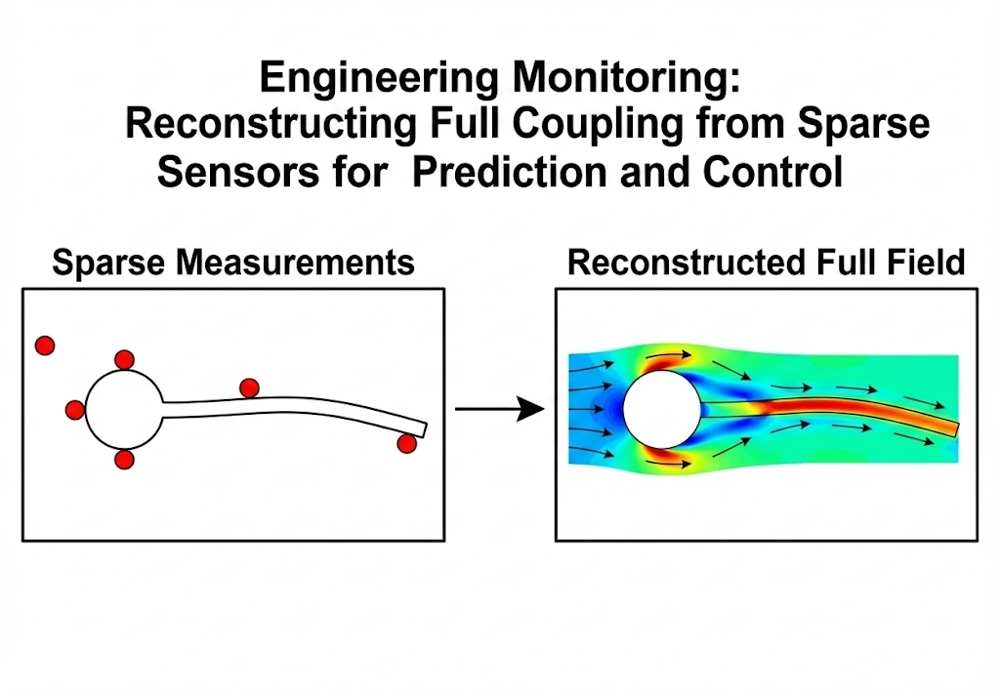

Airfoil pitch control
Physics of Fluids · First-author paperReinforcement learning for airfoil pitch control in a separated wake.
Selected projects in computational mechanics, scientific machine learning, and flow control.
Reinforcement learning for airfoil pitch control in a separated wake.

Generative reconstruction of coupled flow and deformation from sparse measurements.

Experimental and computational modeling of pediatric upper airway mechanics.

Aerodynamic modeling of gliding in the Early Cretaceous bird Confuciusornis.

Simulation of airflow, ventilation, and draw resistance in cigarettes.